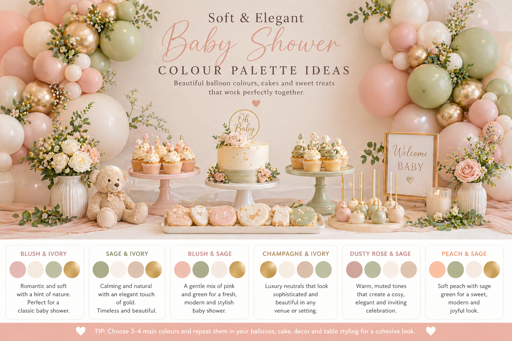
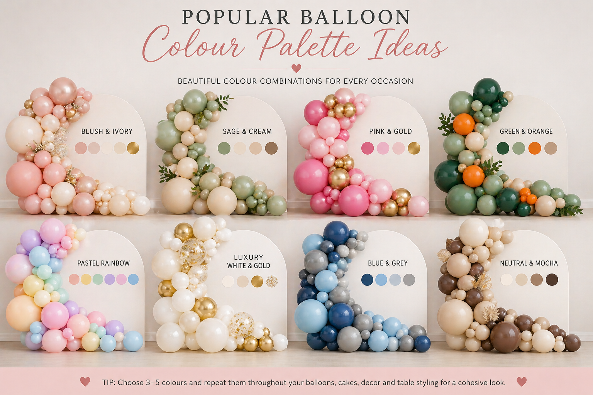

Choosing the right balloon colour palette is one of the biggest decisions when planning a party. The colours set the mood, shape the look of the room and help connect everything together — from the balloons and backdrop to the cake, cupcakes, flowers and dessert table. Get it right and the whole setup feels intentional and polished. Get it wrong and even a large, well-installed display can feel disconnected.
At Little Moment Studio, our focus is balloon styling and celebration setups across Sittingbourne and Kent. Colour palette decisions are one of the first things we talk through with every client, and the guidance in this article reflects what works in practice — not just what looks good on a mood board.
Whether you are planning a baby shower, a birthday party or a themed celebration, this guide will help you choose colours that look beautiful together and feel right for your event.
Why Your Balloon Colour Palette Matters
Balloons are usually one of the largest and most visible features at a party. A balloon garland behind a dessert table can be two metres wide and taller than the room’s furniture. The colours you choose will define the atmosphere of the entire space.
A strong palette makes even a modest display look considered and premium. A weak palette — too many unrelated colours, or colours that clash with the venue — can make a large, expensive installation look messy. The colours do not need to be unusual or complicated. They just need to work together.
| Palette Strength | What It Creates |
|---|---|
| Soft and elegant | Blush, ivory, champagne, sage |
| Bright and playful | Rainbow pastels, pink, yellow, blue |
| Natural and calm | Sage, cream, beige, mocha |
| Bold and adventurous | Forest green, orange, brown, black |
| Royal and pretty | Pink, ivory, gold, lilac |
| Luxury and timeless | White, pearl, champagne, gold |
| Warm and cosy | Beige, mocha, cream, soft brown |
| Fresh and clean | White, baby blue, silver, ivory |
The Simple Rule: Three to Five Colours
Most balloon displays look best with three to five colours. More than five can look busy; fewer than three can look flat. A good starting formula is:
| Colour Role | What It Does |
|---|---|
| Main colour | The colour you see most across the display |
| Second colour | Adds contrast and visual interest |
| Soft neutral | Balances and softens the display |
| Accent colour | Adds a finishing touch — often a metallic |
| Optional deeper shade | Adds depth and grounds the palette |
For example, a soft baby shower palette could be: blush pink + ivory + sage + champagne. A dinosaur party palette could be: forest green + sage + beige + orange. A princess party palette could be: blush pink + ivory + gold + pearl white.
The palette test
Before committing to a palette, hold your colours up together. If one colour looks wrong next to the others, it probably is. The goal is a group of colours that feel like they belong to the same family — not colours that are simply all associated with the theme.
Start with the Type of Celebration
The event type is usually the clearest starting point. Different celebrations carry different colour expectations, and working with those expectations — even if you give them a twist — makes the palette easier to communicate to guests and vendors alike.
| Celebration | Colours That Work Well |
|---|---|
| Baby shower | Blush, ivory, sage, champagne, baby blue |
| First birthday | Soft pastels, neutrals, blush, sage, ivory |
| Birthday party | Pink, gold, pastel rainbow, green, orange, lilac |
| Princess party | Pink, ivory, champagne gold, lilac, pearl white |
| Dinosaur party | Forest green, sage, orange, beige, brown |
| Teddy bear baby shower | Beige, cream, soft brown, sage, ivory |
| Mermaid party | Aqua, lilac, shell pink, pearl white |
| Garden party | Sage, ivory, blush, soft green |
| Luxury celebration | White, gold, champagne, pearl |
| Halloween party | Orange, black, purple, ivory |
Eight Balloon Colour Palettes That Always Work
These are the eight combinations we reach for most often. Each one has a clear mood, works across multiple event types and photographs well in most venues and lighting conditions.

Balloon colour combinations styled by Little Moment Studio, Kent — eight palettes that work across baby showers, birthdays and themed celebrations
1. Blush & Ivory
Soft, pretty and timeless. One of the safest palettes for a gentle, premium look.
Baby showers · first birthdays · princess parties · christenings
2. Sage & Cream
Calm, natural and modern. Feels relaxed and elegant without being too bright.
Baby showers · teddy bear themes · gender-neutral · garden parties
3. Pink & Gold
Perfect for princess parties and pretty birthday setups. Use gold as an accent, not the base.
Princess birthdays · bow themes · first birthdays · girly parties
4. Green & Orange
Bold, adventurous and very different from pastel setups. Strong visual energy.
Dinosaur parties · jungle birthdays · safari themes · outdoor parties
5. Pastel Rainbow
Colourful but still soft. Ideal when you want colour without the display looking too loud.
Children’s birthdays · rainbow parties · Easter · unicorn themes
6. White & Gold
Clean, luxury and timeless. Keep the design simple so it feels elegant, not shiny.
Milestone birthdays · elegant baby showers · christenings · luxury setups
7. Blue & Grey
Clean and classic. Feels fresh, calm and versatile across cloud, star and sky themes.
Baby showers · first birthdays · cloud themes · winter birthdays
8. Neutral & Mocha
Warm, cosy and very stylish. Especially good for teddy bear, boho and rustic themes.
Teddy bear showers · boho birthdays · neutral first birthdays · rustic setups
Baby Shower Balloon Colour Ideas
Baby showers usually look best with soft, calming colours that feel welcoming rather than loud. The palette should feel warm and considered — something that photographs beautifully and feels right for the venue whether it is a private home, a restaurant or a hired hall.

Baby shower balloon colour palettes styled by Little Moment Studio, Sittingbourne — blush, sage, neutral and champagne options with coordinated dessert table styling
| Palette | Best For |
|---|---|
| Blush, ivory, champagne | Soft and elegant baby shower, girl or unknown gender |
| Sage, cream, beige | Gender-neutral, botanical, modern baby shower |
| Baby blue, white, silver | Classic boy baby shower or cloud theme |
| Beige, cream, mocha | Teddy bear or neutral boho baby shower |
| Ivory, pearl, gold | Luxury baby shower at a venue or restaurant |
| Blush, sage, ivory | Modern soft baby shower, gender-neutral with warmth |
If you are unsure, sage, ivory and beige is one of the safest gender-neutral options. It works with almost any venue, photographs beautifully and suits wooden, linen and botanical props naturally. For more ideas, see our full guide to baby shower balloon styling in Kent and our teddy bear baby shower dessert table ideas.
Birthday Balloon Colour Ideas
Birthday balloon colours can be softer, bolder or more themed depending on the party. For children’s birthdays, the theme usually decides the palette. For adult milestones, the venue and the overall aesthetic tend to guide the choice.
| Theme | Balloon Colours |
|---|---|
| Princess party | Pink, ivory, champagne gold, lilac |
| Dinosaur party | Forest green, sage, orange, beige, brown |
| Rainbow party | Pastel yellow, mint, lilac, pink, baby blue |
| Mermaid party | Aqua, lilac, shell pink, pearl white |
| Wizard party | Burgundy, black, gold, ivory |
| First birthday | Blush, ivory, sage, champagne |
| Neutral birthday | Cream, beige, mocha, soft brown |
| Milestone birthday | White, champagne, gold, blush |
For full birthday inspiration, see our birthday balloon styling page, our princess party dessert table ideas and our dinosaur party balloon and dessert table ideas.
Match Balloons to the Cake & Cupcakes
A party looks more polished when the balloons, cake and cupcakes share the same colour story. They do not need to match exactly — they just need to feel like part of the same family. The easiest way to achieve this is to share the balloon palette with your cake maker before they begin designing, so their colours are informed by what the balloons will look like on the day.
| Balloon Palette | Cake & Cupcake Idea |
|---|---|
| Blush, ivory, champagne | Pink bow cake, ivory cupcakes, pearl sprinkles |
| Sage, cream, beige | Teddy bear cake, sage cupcakes, eucalyptus details |
| Pink, ivory, gold | Crown cake, princess cupcakes, gold sprinkles |
| Green, orange, beige | Dinosaur cake, green cupcakes, footprint cookies |
| Aqua, lilac, pink | Mermaid cake, shell topper cupcakes, pearl sprinkles |
| White, gold, pearl | Ivory cake, pearl cupcakes, gold macaron accents |
For a detailed guide to pairing sweet treats with balloon displays, see our article on how to match cupcakes with your balloon display. For dessert table styling more broadly, see how to style a dessert table for a children’s party.
Match Balloons to the Venue
The venue is often overlooked when choosing a balloon palette, but it matters more than most people expect. A white-walled village hall and a dark oak-panelled restaurant call for completely different approaches.
| Venue Style | Good Balloon Colours |
|---|---|
| White or neutral room | Almost any palette works well here |
| Rustic or barn venue | Sage, beige, cream, mocha, blush |
| Garden or outdoor | Sage, ivory, blush, soft green, champagne |
| Dark or dramatic venue | Gold, ivory, champagne, burgundy, pearl |
| Modern or minimalist venue | White, gold, black accents, blush |
| Village hall or community space | Softer, warmer colours elevate the space most |
| Restaurant private dining | Champagne, ivory, gold, blush — refined and controlled |
If the venue is already colourful or has a strong character, choose a simpler balloon palette that works with the space rather than against it. If the venue is plain, the balloons can carry more of the visual impact.
Choosing an Accent Colour
An accent colour adds finishing interest to a display, but too many accents can make it feel busy. In most cases, one metallic accent is enough. The most common mistake is adding gold, silver and rose gold all in the same display — individually each is lovely, together they compete.
| Accent Colour | Works Well With |
|---|---|
| Gold | Blush, ivory, sage, white, pink — the most versatile accent |
| Champagne | Neutral baby showers, luxury setups, soft birthdays |
| Mocha | Neutral palettes, teddy bear themes, boho styling |
| Orange | Dinosaur parties, autumn themes, Halloween |
| Lilac | Mermaid parties, princess themes, pastel rainbow |
| Black | Halloween, luxury black and gold, wizard themes |
| Silver | Baby blue palettes, winter themes, moon and star parties |
“Blush, ivory and a handful of champagne chrome balloons will always look more elegant than blush, ivory, gold, rose gold, silver and pearl all used together. Restraint with accent colours is one of the easiest ways to make a display look more premium.”
Balloon Finishes: Matte, Chrome & Pearl
Colour is not the only variable. The finish of the balloon changes the mood significantly, and mixing finishes carefully is one of the things that separates a considered display from a basic one.
| Finish | Look & Best Use |
|---|---|
| Matte | Soft, modern and stylish — suits almost every palette |
| Chrome | Shiny, bold and luxury — use as accents, not base colour |
| Pearl | Soft shine — elegant for baby showers and premium events |
| Confetti | Playful and celebratory — suits birthdays and fun themes |
| Clear | Light and airy — softens a display and adds depth |
| Pastel | Gentle and child-friendly — ideal for first birthdays |
A good example: matte blush + ivory pearl + a few champagne chrome balloon accents. The matte provides the base, the pearl adds softness, and the chrome gives it sparkle without overwhelming the palette. This almost always looks more elegant than using chrome throughout.
How Many Colours for Different Garland Sizes
| Garland Size | Recommended Colours |
|---|---|
| Small garland (up to 1.5m) | 2–3 colours |
| Medium garland (1.5–3m) | 3–4 colours |
| Large installation (3m+) | 4–5 colours |
| Full dessert table backdrop | 4–5 colours plus foliage |
If the display includes a dessert table, cake, cupcakes and florals, keep the balloon colours controlled so the whole setup does not feel too busy. The balloons and the sweet treats should share the same palette rather than each adding their own separate colour story.
If You Are Not Sure Where to Start
Start with these questions before choosing any colours:
- What is the occasion?
- Is there a specific theme?
- What colours are already in the venue?
- What colour is the cake or dessert table?
- Are there flowers or other decorations?
- Do you want the feel to be soft, bold, luxury or playful?
- Are there any colours you definitely want to avoid?
If you still are not sure after answering those, these safe starting palettes work for almost every occasion:
| Occasion | Safe Starting Palette |
|---|---|
| Baby shower | Sage, ivory, beige |
| Girl’s birthday | Pink, ivory, gold |
| Boy’s birthday | Green, beige, orange or baby blue, white, grey |
| First birthday | Blush, ivory, champagne |
| Neutral or unknown | Cream, beige, mocha |
| Luxury setup | White, champagne, gold |
Quick Reference: Palettes by Theme
| Theme | Colour Palette |
|---|---|
| Baby shower | Blush, ivory, sage, champagne |
| Teddy bear baby shower | Beige, cream, mocha, ivory |
| Princess party | Pink, ivory, gold, pearl white |
| Dinosaur party | Forest green, sage, orange, beige |
| Mermaid party | Aqua, lilac, shell pink, pearl white |
| Wizard party | Burgundy, black, gold, ivory |
| Rainbow party | Pastel yellow, mint, lilac, pink, blue |
| Halloween | Orange, purple, black, ivory |
| Christmas | Green, red, white, gold |
| Luxury birthday | White, champagne, gold, blush |
For theme-specific inspiration, see our full guides: baby shower dessert table ideas, princess party dessert table ideas and dinosaur party balloon and dessert table ideas.
Not Sure Which Colours to Choose for Your Event?
We are happy to talk through colour palettes as part of a free consultation. Based in Sittingbourne, we style balloon displays for baby showers, birthdays and celebrations across Kent.